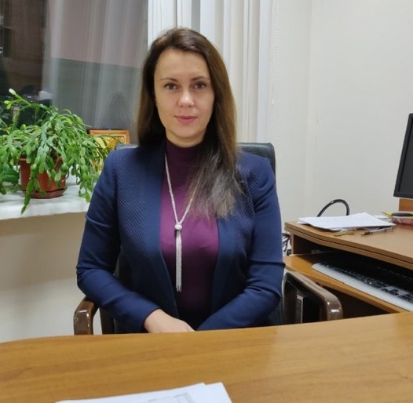

Особиста сторінка викладача
Ульяновська Юлія Вікторівна
Завідувач кафедри, доцент, кандидат технічних наук
Кафедра комп’ютерних наук та інженерії програмного забезпечення, Університет митної справи та фінансів
Тут ви можете знайти інформацію про викладацьку діяльність, наукові праці, дисципліни та контакти для зв'язку.
